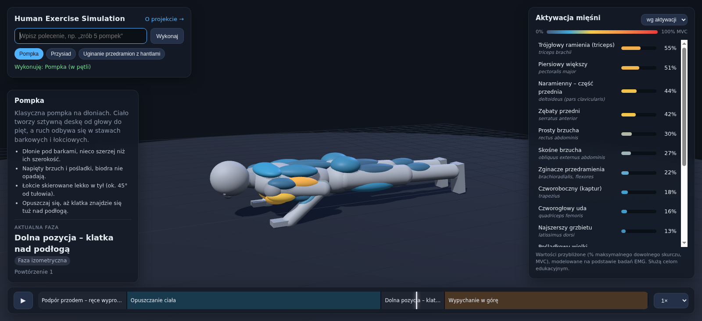
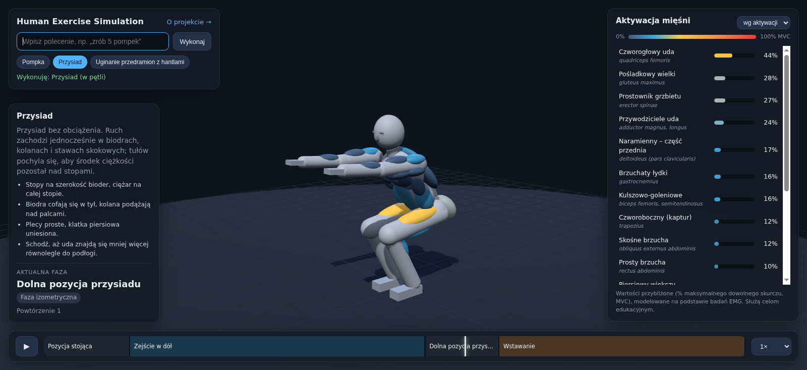
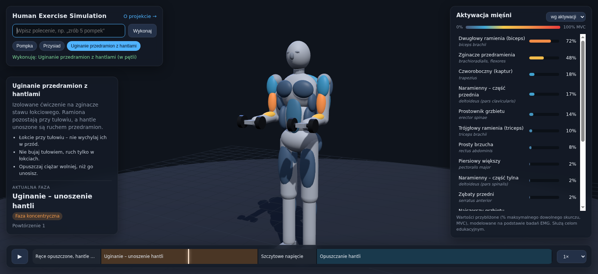

Human Exercise Simulation to interaktywny model 3D człowieka, który wykonuje ćwiczenia na polecenie („zrób 5 pompek”) i na żywo pokazuje, które mięśnie są aktywowane, w jakiej fazie ruchu i jak mocno.
Zrzuty ekranu z aktualnej wersji demo.



Dlaczego to ma sens.
Atlasy anatomiczne i filmy treningowe pokazują albo ruch, albo mięśnie, i to statycznie. Trudno zrozumieć, że ten sam mięsień pracuje inaczej przy opuszczaniu i wypychaniu ciała ani dlaczego najtrudniejszy jest dół pompki.
Łączymy ruch i fizjologię w jednej, interaktywnej scenie. Każda klatka animacji ma przypisaną aktywację każdego mięśnia. Można zatrzymać ruch, przewinąć do konkretnej fazy i obejrzeć model z dowolnej strony.
Tłumaczenie techniki i celu ćwiczenia podopiecznym.
Pokazanie pacjentowi, co dokładnie wzmacnia dane ćwiczenie.
Anatomia funkcjonalna dla studentów AWF, fizjoterapii i medycyny.
Silnik wizualizacji osadzany w istniejących aplikacjach treningowych.
Architektura: cztery niezależne warstwy, z których każdą można później wymienić na dokładniejszą.
Parser zamienia „zrób 5 pompek” na ćwiczenie i liczbę powtórzeń.
Docelowo: LLM.
Ćwiczenie to fazy ruchu plus kinematyka odwrotna (IK): dłonie i stopy stoją w miejscu, reszta ciała się dopasowuje.
Aktywacja każdego mięśnia zależy od głębokości ruchu i typu skurczu (koncentryczny, ekscentryczny, izometryczny), skalibrowana na danych EMG.
Docelowo: symulacja biomechaniczna.
Three.js w przeglądarce: kolor mięśnia od niebieskiego do czerwonego, panel z wartościami i oś czasu faz.
GOTOWE działa w demo · W TRAKCIE następne w kolejce · PLANOWANE na roadmapie
| Status | Funkcja | Opis |
|---|---|---|
| GOTOWE | Model 3D człowieka | Stylizowany manekin ze szkieletem (14 stawów) i 17 grupami mięśni widocznymi na powierzchni ciała. |
| GOTOWE | 3 ćwiczenia | Pompka, przysiad, uginanie przedramion z hantlami. Każde z opisem i wskazówkami technicznymi. |
| GOTOWE | Aktywacja mięśni na żywo | Kolor mięśni i paski % MVC aktualizowane w każdej klatce, z uwzględnieniem opóźnienia reakcji mięśnia. |
| GOTOWE | Fazy ruchu | Oś czasu z fazami ekscentryczną, koncentryczną i izometryczną. Przewijanie, pauza i tempo od 0,25× do 2×. |
| GOTOWE | Polecenia tekstowe (PL) | „zrób 5 pompek”, „trzy przysiady”, „uginanie”, „stop”, „wolniej”, „odpocznij”. |
| GOTOWE | Interakcja z modelem | Obracanie kamery, podpowiedź z nazwą mięśnia po najechaniu, podświetlanie mięśnia z listy. |
| W TRAKCIE | Polecenia przez LLM | Dowolne sformułowania i parametry, np. „wolne pompki na szeroko, 3 sekundy w dół”. |
| W TRAKCIE | Biblioteka ćwiczeń | Plank, wykroki, podciąganie, martwy ciąg, wiosłowanie. Warianty (szerokie i wąskie pompki). |
| PLANOWANE | Realistyczny model anatomiczny | Siatka z dokładnymi kształtami mięśni (np. na bazie Z-Anatomy) zamiast manekina. |
| PLANOWANE | Symulacja biomechaniczna | Aktywacje liczone z fizyki ruchu (OpenSim / MuJoCo MyoSuite) zamiast krzywych z literatury. |
| PLANOWANE | Personalizacja | Masa ciała, obciążenie i tempo zmieniają aktywację. Porównanie dwóch wariantów obok siebie. |
| PLANOWANE | Analiza techniki z kamery | Estymacja pozy z wideo użytkownika, nałożenie na model i wskazanie błędów techniki. |
| PLANOWANE | Wersja angielska | Interfejs i polecenia w języku angielskim. |
Od demonstratora do narzędzia edukacyjnego opartego na nauce.
Uczciwie o tym, co model potrafi dziś.
Wartości aktywacji w MVP to uproszczony model. Poziomy szczytowe są inspirowane zakresami raportowanymi w badaniach EMG (wyrażonymi jako % MVC), a przebieg w czasie wynika z głębokości ruchu i typu skurczu. Nie są to pomiary ani wynik symulacji fizycznej. Przed użyciem w celach klinicznych wymagają weryfikacji przez eksperta.
| Data | Wersja | Zmiany |
|---|---|---|
| 23.11.2026 | 0.1 | Pierwsze MVP: manekin 3D z 17 grupami mięśni, pompka, przysiad i uginanie przedramion, aktywacje na żywo, oś faz, polecenia tekstowe po polsku, strona projektu. |